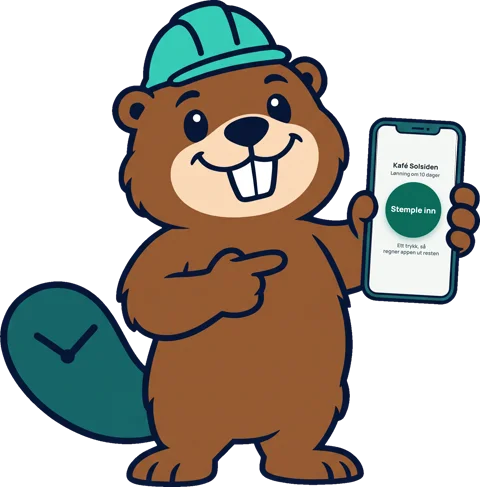
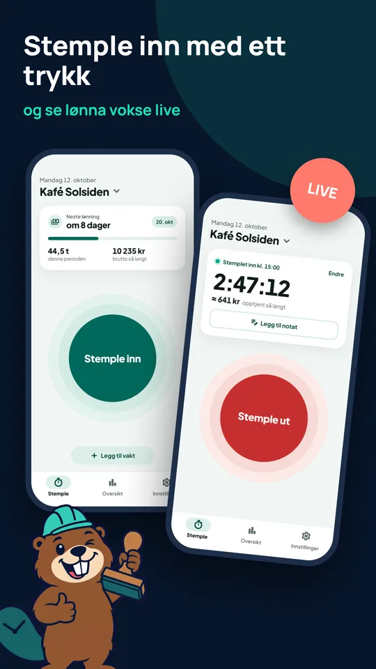
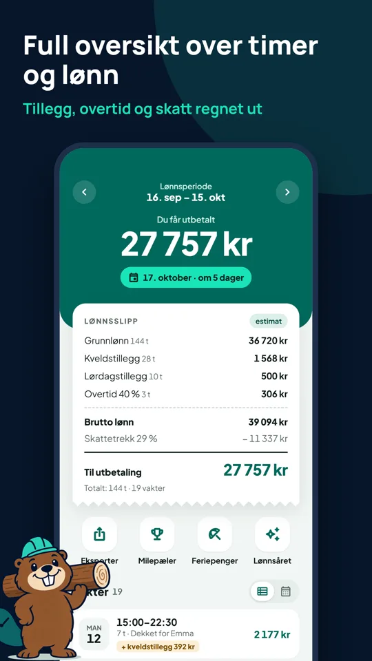
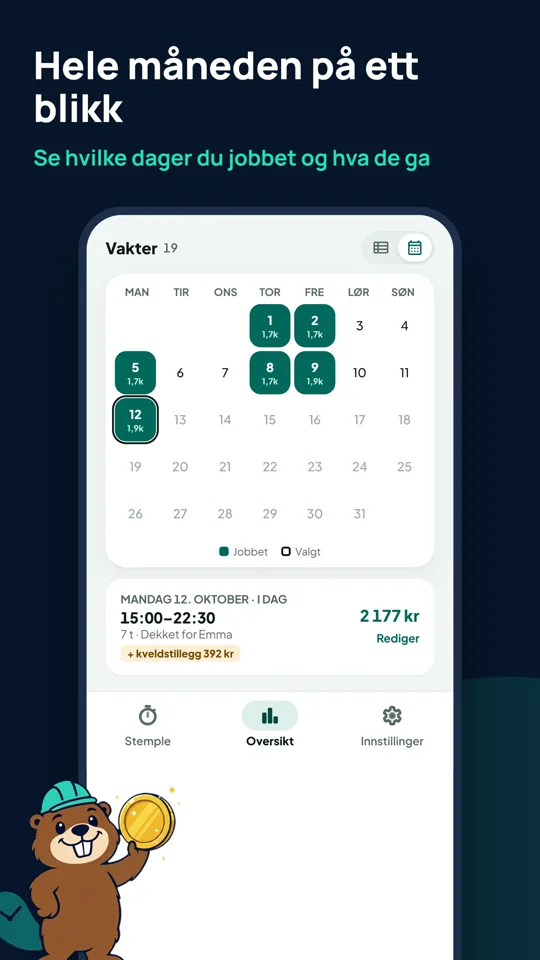
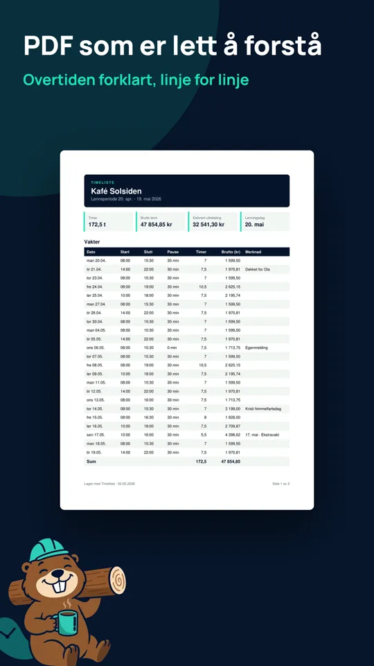
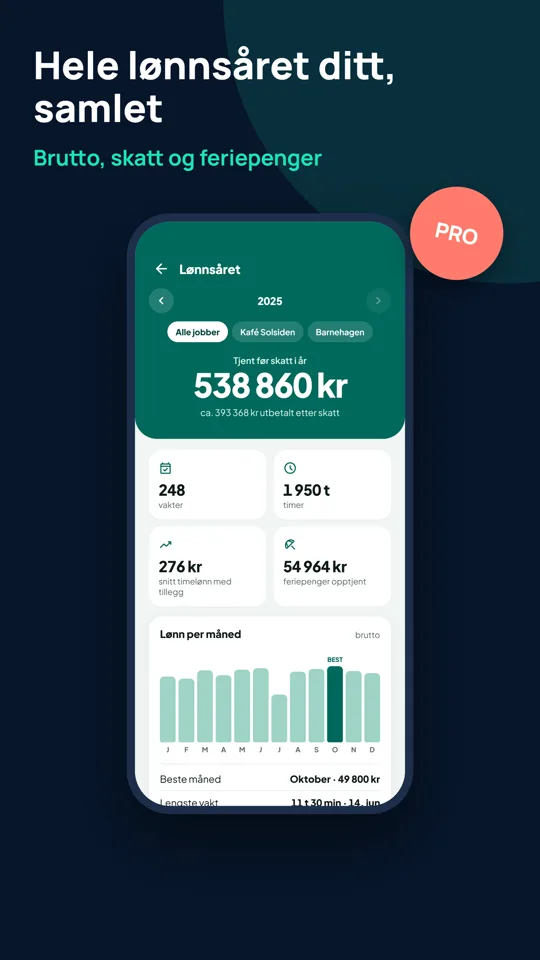

Timeliste · your private pay overview
Know what you've earned before payday.
Timeliste is your own private record of your shifts. Keep clocking in at work as usual. Timeliste keeps a running total through the month: hours worked, what you've earned so far, and roughly what you'll be paid.

The video is in Norwegian, like the app.
For you, not for your employer
It doesn't replace the clock at work
Keep punching in the way your workplace asks. Timeliste is only for you, and nothing is sent to your employer or anyone else.
Follow your pay all month
See hours, earnings so far and an estimate of your next payout, after tax and with supplements included.
Check your payslip
When your pay arrives, compare it with your own numbers. If something's missing, you'll see it straight away.
What it does

Punch in with one tap
One tap when your shift starts, one when it ends. You see what you've earned so far while you work. Breaks are suggested automatically, and you can edit everything afterwards or add shifts by hand.

See roughly what you'll be paid
An estimated payslip for the current pay period: base pay, overtime and supplements, tax and what lands in your account. Tax uses the real Norwegian tax tables (tabelltrekk), or a fixed percentage if you prefer.

The whole month at a glance
A calendar shows which days you worked and what each shift paid, with a countdown to payday.

A timesheet you can hand over
Export a PDF or CSV with every shift, line by line, with overtime explained. Handy when your hours and your payslip don't match.
Milestones along the way
Celebrate your first shift, round numbers of hours and personal records like your best week or longest shift.

Your whole pay year
Gross pay, tax and holiday pay for the year, with a chart of pay per month.
Timeliste Pro
One-time purchase. No subscription.
- No ads
- Multiple jobs with their own rates and rules
- CSV and PDF export
- Dark mode and home-screen widget
- Holiday pay details
- "My pay year" annual recap
Privacy first
No sign-up and no server. Your shifts and pay are stored only on your phone, and nothing is shared with your employer or anyone else.